For my Selfie Week project i wasn't entirely sure what to make in a week time, the one thing i did want in my project was something that wouldn't necessery be all to useful but give me more experience and learn me more of something i don't do too often but want to.
So i wanted to do something with video editing but also wanted to use different techniques that i learned in the past weeks / months.
I started off by making a sort of storyboard / guide that would make it more clear to me how i wanted to approach my project and what i wanted to put into it.
I wanted to use a special effect as a theme and chose Neon for this as you will see at the end result.
The whole idea was to make different scenarios defining who i am hence the name Selfie Week as well.
So the first row of images is about me playing football where i wanted to try and make it look like i was juggling with the ball and at the end shoot it into the screen for a transition into the next scene.
Unfortunately i had to scrap this idea since i didn't have enough time to get the design and renders done on time, all the other scenes did make it into the final result.
The second row of images is about me teaching since i like to help other people with coding, programming or designing.
This scene has been fully designed and edited into Neon in after effects.
The third row is basically how i wanted to animate a logo that i also made during the Selfie Week, more on this in the next section.
And the last row is just an ending screen also made into neon with animations.
I had a general idea of a logo i wanted to make for myself a few weeks before the actual Selfie Week, funny enough i got the idea while being in the shower drawing on the glass.
When the Selfie Week started i began drawing the logo i had in my head and make different iterations from it with little changes in each.
Eventually i chose one of the iterations i made as the one my peers and me looked best and create it digitally through Affinity Designer (same sort of programm as Adobe Illustrator but in my opinion better).
This is the end result of my logo and i am happy with how it turned out.
This video is my end result of the Selfie Week and it combines all things i made above.
I am very happy with how it turned out, especially the logo and the neon animation of me teaching, i would have liked if i was able to also put in the football animation as i designed in my storyboard but i underestimated the time it would take me to make the rest and i rather have a good few products with scrapping some other ones then having everything but not all up too my standard.
From this project i have learned that it is okay to scrap certain parts as long as i can make the rest as i wanted.
I have gained more experience in video editing through after effects and also logo designing which i really enjoyed.